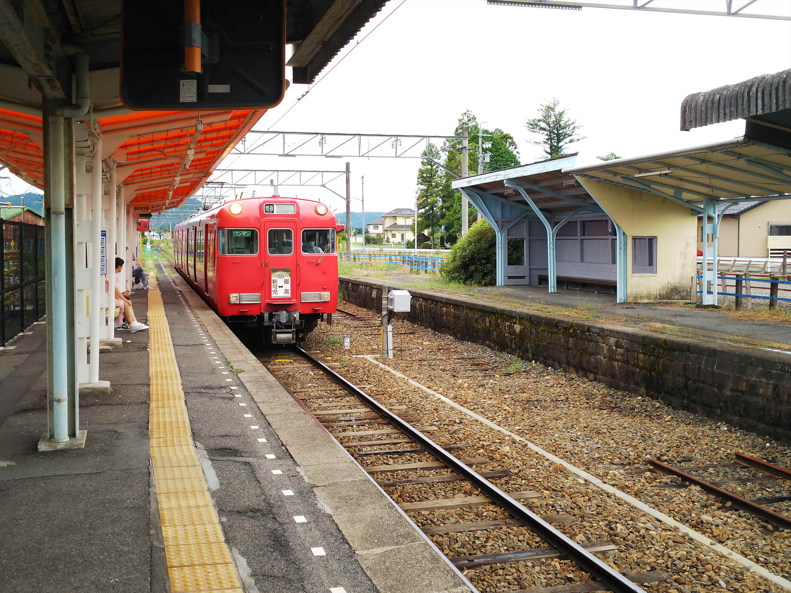
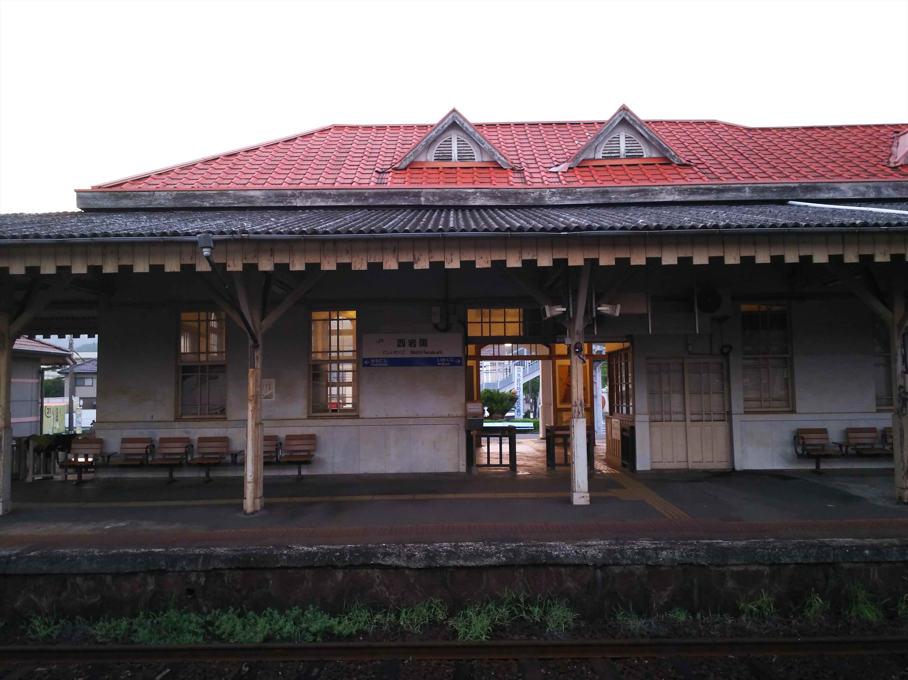

連続使用しか許されなくなった青春18切符。この夏も全然違う行き先の組み合わせ旅となりました。
今回は思いきって５日間を購入。運良く奈良のユーザーに仕事で行かなアカンようになって、初日分はかなり有効活用でけました。１日
あたり2000円になった！
大垣駅にやって来てます。とうとう米原からの車両
が新型のロングシート車に！（右側）最悪ですわ。

対して、バックの養老鉄道は懐かしの近鉄色ですね。
まずは久々に美濃赤坂支線に乗り込みます。

学生時代以来の美濃赤坂駅。こんな広々とした駅や
ったんや。何の記憶も残ってない。
駅舎も古いままですね。
駅前に西濃鉄道の本社が。
美濃赤坂から先も線路がつながっていて、貨物輸送
がされてます。
その部分が西濃鉄道という貨物鉄道です。
古めのＤＬが渋いっす。
次ににやって来たのは可児。

ひと駅乗って、息子と来たときに、妙に印象に残っ
てた明智駅に降り立ってみました。
元々、八百津線の分岐駅で、それっぽい雰囲気が残
ってます。
一時廃止の話も出てた広見線ですが、存続でまとま
ったようです。良かった良かった。


で、たぶん八百津線、乗ってると思います。この駅の記憶がなんとなくあります。
名鉄の岐阜エリアのローカル線は、もっと訪ねとけばと今さらながら悔やまれます。

太多線で美濃太田にやってきました。
元越美南線の長良川鉄道ですね。
フリー切符を買って乗り込みます。

まずは美濃白鳥駅で途中下車します。

今日は白鳥は白鳥踊りの徹夜踊りがあるのですが、
そうとは思えんほど活気も人気もないですね。
再び乗り込んで、終点の北濃駅に到着。
桜に囲まれたいい感じの駅ですね。

前回は学生時代の帰省で、越美北線からバスを乗り継いでここまでやって来た記憶があります。
桜の樹齢は若いし、前回訪問時にはこんなに木々はなかったと思います。

ちなみにこの長良川鉄道、ペイペイやカード決済で払えるみたいです。
そこまでせなアカンのですかね・・・
折り返しの列車に乗って、郡上八幡にやって来まし
た。
そう、８月の郡上八幡といえば何といっても郡上踊
り。
今日から徹夜踊りが始まります。

駅前は祭りがあるとは思えないぐらい静かです。

街の中は祭りっぽい雰囲気です。
ここが有名な川ガキが飛び込む橋ですね。
いや～、よーやるわ。
古い町並みも残ってますね。
山の上にお城もあります。


２０時に、いよいよ徹夜踊りのスタートです。
最初は地元の人ばっかりでしたが、そのうち観光客
も一緒に踊り出します。
踊りは外人たくさん参加してました。
私もちょっと踊ってみましたが、ふりがわからないので早々に退散です。
ほんまに徹夜で踊んの？

郡上八幡２１時発が最終なので、後ろ髪引かれる思
いで最終に乗って移動しました。
なぜか郡上八幡に約１０分遅れで到着した列車は、
遅れを回復することもなく、美濃太田の乗り換えが
間に合わすにあわず。謝罪もなし・・・。ふざけや
がって
さて、翌日。
米原から姫路まで初めて新快速を乗り通しました。
自宅横を定時に通過！
乗り継いで乗り継いで、広島に到着。
広電の新駅が開業してますね。
お盆のせいもあると思いますが、かなりの人混みで
す。


なくなった駅を見てると、ちょっと悲しい風景ですね。

さらに先に進みます。
岩国で降りてバスに乗り込みます。
しか～し！ここで大チョンボ！
降りるバス停間違えて、１５分近く時間のロス！
ほんまボケてる。歳やなぁ。
間違ったバス停から１０分近く歩いてたどり着いた
のが、目的の岩徳線の西岩国駅。
一時期は山陽本線の岩国駅として、観光客でにぎわ
った過去があります。
駅前には木炭バスが！
と思ったら、実物大の復元模型でした。

洒落た駅ですね。

ほんまは岩国に戻って山陽本線で西下する予定でし
たが、乗り継ぎ間に合わず岩徳線で西に移動するこ
とにします。
新幹線のらんでも何とか今日中に目的地に到達でき
そうなので、まぁよしとします。
徳山駅はなんかリフォームして新しくなってました。
徳山からは本日初の国鉄型。
しかし最後のほうはへとへとでした。
続 く ！